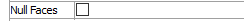

网格单元分组曲面绘图项
说明
按分组显示网格单元曲面。
属性
槽位（Slot） 颜色列表（Color-List） 空面（Null Faces） 隐藏空单元（Hide-Null） 映射（Map） 变形系数（Def-Fac） 多边形（Polygons） 透明度（Transparency） 图例（Legend）
槽位

选择用于分组渲染的槽位。
槽位：从列出的槽位中选择。选择“任意”将显示…
颜色列表

设置用于项目颜色列表的线的属性。详情请参见标准的 颜色列表（color-list） 控件说明。
空面

显示空单元与非空单元之间的面边界。
空面：仅显示（勾选）另一侧为空单元的面。
隐藏空单元

不在绘图中显示空项。详情请参见标准的 隐藏空单元（hide-null） 控件说明。
映射

将该项映射到新的模型坐标。详情请参见标准的 映射（map） 控件说明。
变形系数

设置变形系数。详情请参见标准的 变形系数（def-fac） 控件说明。
多边形

设置项目面片的属性。详情请参见标准的 多边形（polygons） 控件说明。
透明度

设置绘图项的透明度。详情请参见标准的 透明度（transparency） 控件说明。
图例

设置绘图图例中该项目的标签。详情请参见标准的 图例（legend） 控件说明。
在 标题 下方，地下水位绘图项还在 图例 中为 映射、隐藏空单元、变形系数、颜色列表 和 数量 提供控件。
| 这些内容对您有帮助吗？… | FLAC3D © 2019, Itasca | 原文更新于 2020 年 10 月 8 日 |